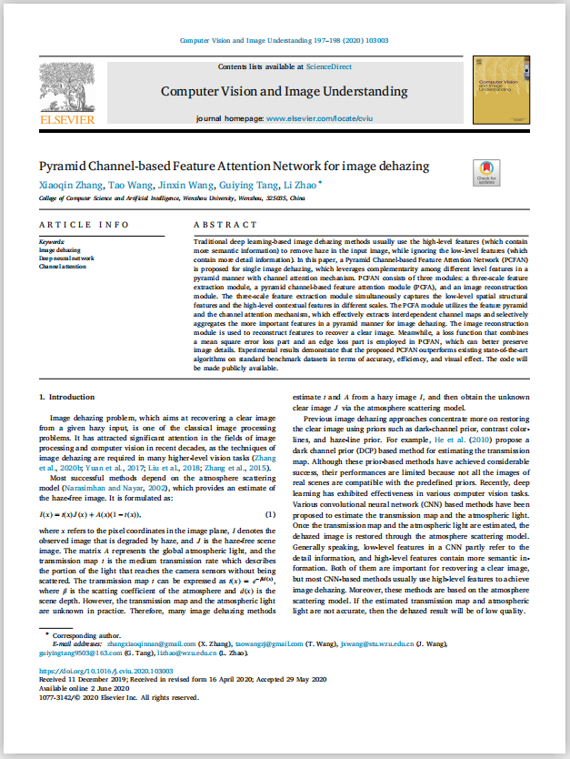
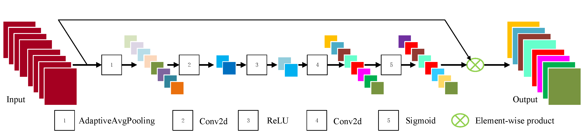
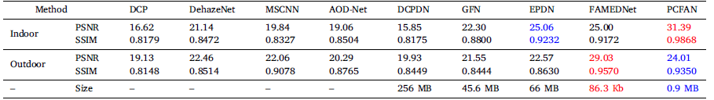
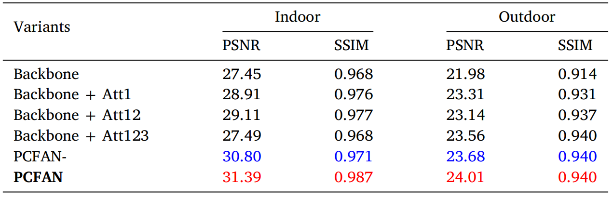
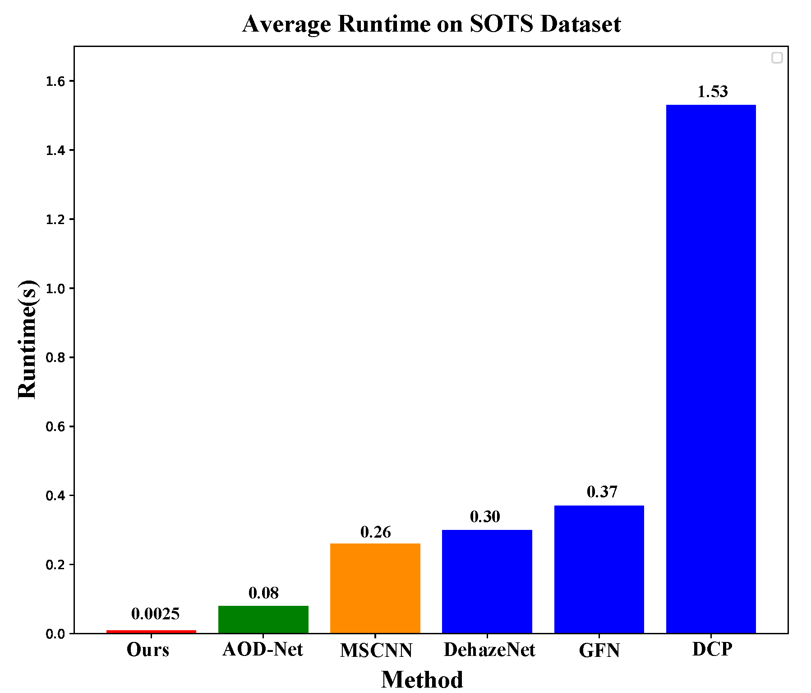

Pyramid Channel-based Feature Attention Network for Image Dehazing
Traditional deep learning-based image dehazing methods usually use the high-level features (which contain
more semantic information) to remove haze in the input image, while ignoring the low-level features (which
contain more detail information). In this paper, a Pyramid Channel-based Feature Attention Network (PCFAN)
is proposed for single image dehazing, which leverages complementarity among different level features in a
pyramid manner with channel attention mechanism. PCFAN consists of three modules: a three-scale feature
extraction module, a pyramid channel-based feature attention module (PCFA), and an image reconstruction
module. The three-scale feature extraction module simultaneously captures the low-level spatial structural
features and the high-level contextual features in different scales. The PCFA module utilizes the feature pyramid
and the channel attention mechanism, which effectively extracts interdependent channel maps and selectively
aggregates the more important features in a pyramid manner for image dehazing. The image reconstruction
module is used to reconstruct features to recover a clear image. Meanwhile, a loss function that combines
a mean square error loss part and an edge loss part is employed in PCFAN, which can better preserve
image details. Experimental results demonstrate that the proposed PCFAN outperforms existing state-of-the-art
algorithms on standard benchmark datasets in terms of accuracy, efficiency, and visual effect.
News
- [June 2020] Paper is released on CVIU
- [January 2021] Code released on Github
Paper
|  |
Xiaoqin Zhang, Tao Wang, Jinxin Wang, Guiying Tang, Li Zhao
Pyramid Channel-based Feature Attention Network for Image Dehazing
CVIU, 2020 (to appear).
|
Overall architecture of PCFAN

Detailed structure of the channel attention block.

Qualitative Comparisons

|
|
Visual comparison results on the SOTS dataset.
|

|
|
Visual comparison with state-of-the-art dehazing methods on the RTTS dataset.
|
Quantitative Comparisons

|
|
Quantitative comparison results of the seven state-of-the-art methods and the PCFAN on the SOTS set.
|

|
|
Comparisons on both indoor and outdoor datasets of SOTS of variants of the proposed PCFAN.
|

|
|
Runtime comparison of different dehaizng methods on SOTS dataset.
|
{kind=link}
{kind=link}
{kind=link}